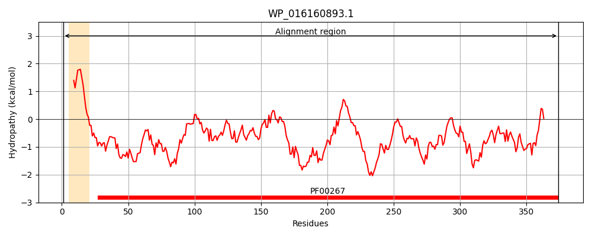
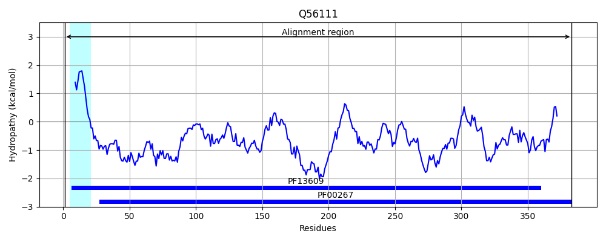
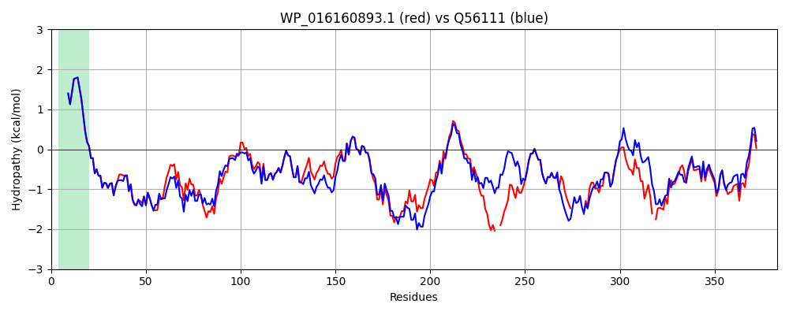

Hit Accession: Q56111
Hit TCID: 1.B.1.1.22
Hit Description: gnl|BL_ORD_ID|14118 gnl|TC-DB|Q56111|1.B.1.1.22 Outer membrane protein S2 OS=Salmonella typhi GN=ompS2 PE=3 SV=1
Mach Len: 383
e:0.000000
Query TMS Count : 1
Hit TMS Count: 1
TMS-Overlap Score: 0.850000
Predicted Substrates:CHEBI:25367;molecule
BLAST Alignment:
Score: 1672 , Bit scores: 648 bits, E-value: 0.0e+00, Alignment length: 383, Percentage identity: 82
Query: 1 MKRKVLALVIPALLAAGAAHAAEIYNKDGNKLDLYGKVDGLHYFSSDSKKDGDQTYLRFGFKGETQINDMLTGYGQWEYNVQANNTESSSDQAWTRLAFAGIKVGDYGSFDYGRNYGVLYDVEGWTDMLPEFGGDSYTYADNFMAGRANGVATYRNSDFFGLVEGLNFALQYQGKNEGQNAQDINVGTNNRSSDSDVRFDNGDGFGLSTSYDFGMGISAAAAYTSSDRTNDQMTQ--TNARGDKAEAWTAGLKYDANDIYLATMYSETRNMTPYG------NDGVANKTQNFEVTAQYQFDFGLRPAISYLQSKGKDL-YNNGRYADKDLVKYMDVGATYYFNRNMSTYVDYKINLLDDNDSFYKDNGISTDNIVALGLVYQF 374
MKRKVLALVIPALLAAGAAHAAEIYNKDGNKLDLYGKVDGLHYFS DS KDGDQTY+R GFKGETQIND LTGYGQWEYNVQAN TE +WTRLAFAG+K GDYGSFDYGRNYGVLYDVEGWTDMLPEFGGDSYTYADN+M GRANGVATYRN+DFFGLV+GLNFALQYQGKNE Q+A D+N+GTNNR++ D+R+DNGDGFG+ST+YD GMG SA AAYT+SDRTN+Q+ T A GDKA+AWTAGLKYDAN+IYLATMYSETRNMTPYG + GVANKTQNFEVTAQYQFDFGLRPA+S+L SKGKDL YNN DKDLVKY DVGATYYFN+N STYVDYKINLLDD+D FYKD GISTD+IVALG+VYQF
Sbjct: 1 MKRKVLALVIPALLAAGAAHAAEIYNKDGNKLDLYGKVDGLHYFSDDSSKDGDQTYMRVGFKGETQINDQLTGYGQWEYNVQANTTEGEGANSWTRLAFAGLKFGDYGSFDYGRNYGVLYDVEGWTDMLPEFGGDSYTYADNYMTGRANGVATYRNTDFFGLVDGLNFALQYQGKNESQSADDVNIGTNNRNNGDDIRYDNGDGFGISTTYDIGMGFSAGAAYTTSDRTNEQVNAGGTIAGGDKADAWTAGLKYDANNIYLATMYSETRNMTPYGKTDKGYDGGVANKTQNFEVTAQYQFDFGLRPAVSFLMSKGKDLTYNNVNGDDKDLVKYADVGATYYFNKNFSTYVDYKINLLDDDDPFYKDAGISTDDIVALGMVYQF 383 | Protein Hydropathy Plots: |
|---|
|  |  |
Pairwise Alignment-Hydropathy Plot:
|
|---|
|  |